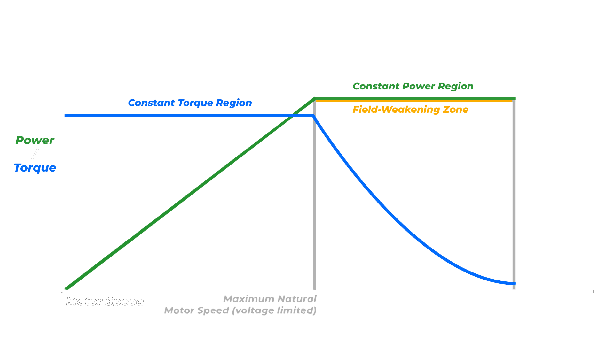

A guide to the Ninebot MAX G2, G30 and Field Weakening
Eine Anleitung zum Ninebot MAX G2, G30 und Field Weakening
Introduction
ScooterHacking ReFlasher is a Windows software that allows you to restore or downgrade your Xiaomi/Ninebot ESC/BLE via SWD using an ST-Link programmer.
Einführung
ScooterHacking ReFlasher ist eine Windows-Software, mit der Sie Ihren Xiaomi/Ninebot ESC/BLE über SWD mit einem ST-Link-Programmierer wiederherstellen oder downgraden können.
Requirements
Windows computer
ST-Link programmer
ReFlasher software
USB cable
Target device (e.g., Xiaomi/Ninebot scooter)
Voraussetzungen
Windows Rechner
ST-Link Programmierer
ReFlasher Software
USB-Kabel
Zielgerät (z. B. Xiaomi/Ninebot-Roller)
Supported Models
Ninebot EsX - DRV/BLE
Ninebot E - DRV/BLE
Ninebot F20 / F30 / F40 - DRV/BLE
Ninebot D18 / D28 / D38 - DRV
Ninebot MAX G30 - DRV/BLE
Ninebot MAX G2 - DRV
Instructions
Download the latest version of the ReFlasher software from the ScooterHacking Cloud.
Extract the downloaded ZIP file to a folder on your computer.
Open the ReFlasher software on your computer.
Hinweise
Laden Sie die neueste Version der ReFlasher-Software von der ScooterHacking Cloud.
Entpacken Sie die heruntergeladene ZIP-Datei in einen Ordner auf Ihrem Computer.
Öffnen Sie die ReFlasher-Software auf Ihrem Computer.
How to Use ReFlasher
Open ReFlasher and connect the device you want to flash to the ST-Link. You can find the pinouts for different boards under the “Diagrams” menu at the top of the ReFlasher app. Soldering is suggested, but if you are careful, you can hold the jumper wires on the debug pads.
After connecting the target board to the ST-Link, plug the ST-Link into your computer and choose your scooter model, either BLE or DRV, then enter any necessary details. Information like the serial number, mileage, or scooter name can be set freely and doesn't need to match your previous vehicle settings.
Refer to the “AT32 / GD32” section below for additional information.
Press “Launch recovery” and allow ReFlasher to complete the process. If an error occurs, you can activate the console in the Settings menu for more detailed feedback.
Ensure ReFlasher shows “All done.” Reassemble your board in the scooter enough to confirm the recovery was successful.
After the process is complete, disconnect the ST-Link and restart your scooter.
Wie man ReFlasher verwendet
Öffnen Sie ReFlasher und verbinden Sie das Gerät, das Sie flashen möchten, mit dem ST-Link. Sie können die Pinbelegung für verschiedene Boards unter dem Menü „Diagramme“ oben in der ReFlasher-App finden. Es wird empfohlen, zu löten, aber wenn Sie vorsichtig sind, können Sie die Überbrückungsdrähte an die Debug-Pads halten.
Nachdem Sie die Zielplatine mit dem ST-Link verbunden haben, schließen Sie den ST-Link an Ihren Computer an und wählen Sie Ihr Rollermodell, entweder BLE oder DRV, und geben Sie dann alle erforderlichen Details ein. Informationen wie die Seriennummer, der Kilometerstand oder der Name des Rollers können frei eingestellt werden und müssen nicht mit Ihren vorherigen Fahrzeugeinstellungen übereinstimmen.
Weitere Informationen finden Sie im Abschnitt „AT32 / GD32“ weiter unten.
Drücken Sie auf „ Launch recovery“ und lassen Sie ReFlasher den Vorgang abschließen. Wenn ein Fehler auftritt, können Sie die Konsole im Menü „Einstellungen“ aktivieren, um eine detailliertere Rückmeldung zu erhalten.
Stellen Sie sicher, dass der ReFlasher „All done“ anzeigt. Bauen Sie Ihr Board wieder in den Scooter ein, um zu bestätigen, dass die Wiederherstellung erfolgreich war.
Nachdem der Vorgang abgeschlossen ist, starten Sie Ihr Elektromobil neu.
AT32 / GD32
When using ReFlasher, you may encounter the question of whether your scooter uses an AT32 or GD32 chip. The answer depends on the model and firmware version of your scooter. Here are some general guidelines to help you determine which chip your scooter uses:
AT32: Older models, such as the Ninebot MAX G30, typically use the AT32 chip.
GD32: Newer models, such as the Ninebot MAX G30LP, often use the GD32 chip.
If you are unsure which chip your scooter has, you can check the firmware version or consult the manufacturer's documentation for more information.
AT32 / GD32
Bei der Verwendung von ReFlasher kann die Frage auftauchen, ob Ihr Scooter einen AT32- oder GD32-Chip verwendet. Die Antwort hängt von dem Modell und der Firmware-Version Ihres Rollers ab. Hier sind einige allgemeine Richtlinien, die Ihnen helfen zu bestimmen, welchen Chip Ihr Roller verwendet:
AT32: Ältere Modelle, wie z. B. der Ninebot MAX G30, verwenden in der Regel den AT32-Chip.
GD32: Neuere Modelle, wie der Ninebot MAX G30LP, verwenden häufig den GD32-Chip.
Wenn Sie sich nicht sicher sind, welchen Chip Ihr Scooter hat, können Sie die Firmware-Version überprüfen oder die Dokumentation des Herstellers für weitere Informationen konsultieren.
Note
Before using ReFlasher, please ensure that you have read and understood the following requirements:
The WinUSB driver must be installed for your ST-Link to work with this software as it uses OpenOCD. Download the Zadig utility from the official link, then in "Options", select "List all devices", and install WinUSB. You can download Zadig from here.
NET Core v3.1 must be installed for ReFlasher to run. You can get the x64 installer from here or from Microsoft.
Anmerkung
Bevor Sie ReFlasher verwenden, stellen Sie bitte sicher, dass Sie die folgenden Anforderungen gelesen und verstanden haben:
Der WinUSB-Treiber muss installiert sein, damit Ihr ST-Link mit dieser Software funktioniert, da er OpenOCD verwendet. Sie müssen das Zadig-Dienstprogramm über den offiziellen Link herunterladen, dann unter „Optionen“ „Alle Geräte auflisten“ auswählen und WinUSB installieren. Sie können das Programm Zadig von hier herunterladen.
NET Core v3.1 must be installiert sein, damit ReFlasher läuft. Sie können den x64-Installer von hier oder von Microsoft erhalten.
Field Weakening
Feldschwächung

What is Field Weakening?
In this range, the motor runs at a constant torque (blue line), which remains the same regardless of the speed.
The green line shows the power, which increases linearly with increasing engine speed. This means that the motor delivers maximum power at low speeds. This is the range in which your e-scooter can accelerate strongly because the torque remains high.
The speed of the motor increases in this range as long as the voltage of the motor generates the full magnetic force.
As soon as the motor speed reaches the natural maximum (in this case due to the voltage limitation), the motor is in the constant power range.
Here, the power remains constant (green line), but the torque begins to decrease (blue line).
In this zone, the e-scooter can no longer accelerate as quickly, as the available torque decreases. However, the power remains high, which helps you to maintain speed.
As soon as the motor enters this range, the magnetic field is actively weakened. This means that the motor is driven beyond its normal speed limit.
In this zone, the torque drops sharply (blue line). The e-scooter therefore has less power for accelerating or climbing slopes.
The power (green line) initially remains constant, but then also decreases as the speed increases further.
At low and medium speed (left in the diagram), the e-scooter can accelerate strongly because the torque is constant.
However, if you want to reach a higher speed, the e-scooter enters the field weakening zone. Here the motor speed is increased further, but the acceleration decreases as the torque decreases. This enables higher top speeds on flat stretches, but with less power to tackle inclines, for example.
Was bedeutet Feldschwächung?
In diesem Bereich läuft der Motor mit einem konstanten Drehmoment (blaue Linie), das unabhängig von der Drehzahl gleich bleibt.
Die grüne Linie zeigt die Leistung, die mit zunehmender Motordrehzahl linear ansteigt. Das bedeutet, dass der Motor bei niedrigen Drehzahlen die maximale Leistung liefert. Das ist der Bereich, in dem Ihr E-Scooter stark beschleunigen kann, weil das Drehmoment hoch bleibt.
Die Drehzahl des Motors steigt in diesem Bereich, solange die Spannung des Motors die volle Magnetkraft erzeugt.
Sobald die Motordrehzahl das natürliche Maximum erreicht (in diesem Fall aufgrund der Spannungsbegrenzung), befindet sich der Motor im Bereich konstanter Leistung.
Hier bleibt die Leistung konstant (grüne Linie), aber das Drehmoment beginnt zu sinken (blaue Linie).
In diesem Bereich kann der E-Scooter nicht mehr so schnell beschleunigen, da das verfügbare Drehmoment abnimmt. Die Leistung bleibt jedoch hoch, was Ihnen hilft, die Geschwindigkeit zu halten.
Sobald der Motor diesen Bereich erreicht, wird das Magnetfeld aktiv geschwächt. Das bedeutet, dass der Motor über seine normale Drehzahlgrenze hinaus betrieben wird.
In diesem Bereich fällt das Drehmoment stark ab (blaue Linie). Der E-Scooter hat also weniger Kraft zum Beschleunigen oder für Steigungen.
Die Leistung (grüne Linie) bleibt zunächst konstant, nimmt dann aber mit zunehmender Geschwindigkeit ebenfalls ab.
Bei niedriger und mittlerer Geschwindigkeit (links im Diagramm) kann der E-Scooter stark beschleunigen, da das Drehmoment konstant ist.
Wenn Sie jedoch eine höhere Geschwindigkeit erreichen wollen, gelangt der E-Scooter in die Feldschwächungszone. Hier wird die Motordrehzahl weiter erhöht, aber die Beschleunigung nimmt ab, da das Drehmoment sinkt. Dies ermöglicht höhere Spitzengeschwindigkeiten auf flachen Strecken, aber weniger Leistung, um zum Beispiel Steigungen zu bewältigen.
The values calculated here are theoretical estimates based on input parameters. Actual results may differ due to system efficiency, environmental factors, and component tolerances. Use these values for planning purposes and refer to hardware specifications for practical applications.
Die hier berechneten Werte sind theoretische Schätzungen auf der Grundlage von Eingabeparametern. Die tatsächlichen Ergebnisse können aufgrund von Systemeffizienz, Umweltfaktoren und Komponententoleranzen abweichen. Verwenden Sie diese Werte für Planungszwecke und beziehen Sie sich für praktische Anwendungen auf die Hardware-Spezifikationen.
Field Weakening Calculator
Feldschwächungsrechner
Calculated Field Weakening Settings:
Berechnete Feldschwächungseinstellungen:
ScooterHacking Utility
The Scooterhacking Utility is a mobile app that allows users to customize and modify e-scooters. It offers features like firmware updates, speed adjustments, and error diagnostics for various scooter models.
Das Scooterhacking Utility ist eine mobile App, mit der Nutzer E-Scooter anpassen und verändern können. Sie bietet Funktionen wie Firmware-Updates, Geschwindigkeitsanpassungen und Fehlerdiagnosen für verschiedene Scooter-Modelle.
ScooterHacking ReFlasher is a Windows software that facilitates the recovery or downgrade of your Xiaomi/Ninebot ESC/BLE through SWD using an ST-Link programmer.
ScooterHacking ReFlasher ist eine Windows-Software, die die Wiederherstellung oder das Downgrade Ihres Xiaomi/Ninebot ESC/BLE über SWD mit einem ST-Link-Programmierer ermöglicht.
Scootbatt is a handy mobile app designed to keep e-scooter riders informed about their scooter's battery status and remaining range. The app allows users to monitor their scooter's condition in real-time, receive alerts when the battery is low, and plan the best routes based on the available battery life. With Scootbatt, users can optimize their scooter usage and avoid running out of power unexpectedly. It's user-friendly and perfect for anyone who relies on e-scooters for their daily commute or leisure rides.
Scootbatt ist eine praktische mobile App, mit der E-Scooter-Fahrer über den Batteriestatus und die verbleibende Reichweite ihres Rollers informiert werden. Die App ermöglicht es den Nutzern, den Zustand ihres Rollers in Echtzeit zu überwachen, Warnungen zu erhalten, wenn die Batterie schwach ist. Mit Scootbatt können Nutzer ihren Roller optimal nutzen und vermeiden, dass ihnen unerwartet der Strom ausgeht. Scootbatt ist benutzerfreundlich und perfekt für alle, die E-Scooter für den täglichen Weg zur Arbeit oder für Freizeitfahrten nutzen.
Nine Dash is a mobile app designed to help e-scooter riders track important information about their scooters. Similar to Scootbatt, it offers real-time monitoring of the scooter’s battery life, range, and performance. The app provides detailed stats, allowing users to plan their rides efficiently, avoid running out of power, and ensure their scooter is always in optimal condition. With a user-friendly interface and essential features for e-scooter management, Nine Dash is a valuable tool for anyone who regularly uses an electric scooter for commuting or leisure.
Nine Dash ist eine mobile App, die E-Scooter-Fahrern helfen soll, wichtige Informationen über ihre Roller zu verfolgen. Ähnlich wie Scootbatt bietet sie eine Echtzeitüberwachung der Batterielebensdauer, Reichweite und Leistung des Rollers. Die App liefert detaillierte Statistiken, die es den Nutzern ermöglichen, ihre Fahrten effizient zu planen, zu vermeiden, dass ihnen der Strom ausgeht, und sicherzustellen, dass sich ihr Roller immer in optimalem Zustand befindet.Mit einer benutzerfreundlichen Oberfläche und wichtigen Funktionen für das E-Scooter-Management ist Nine Dash ein wertvolles Werkzeug für jeden, der regelmäßig einen Elektroroller für den Arbeitsweg oder in der Freizeit benutzt.
The Ninebot MAX G2 is a popular electric scooter that can be customized and modified using the ScooterHacking Utility app. The app allows users to adjust the scooter's speed, power, and other settings to enhance its performance.
Einleitung
Der Ninebot MAX G2 ist ein beliebter e-Scooter, der mit der ScooterHacking Utility-App angepasst und modifiziert werden kann. Die App ermöglicht es den Benutzern, die Geschwindigkeit, Leistung und andere Einstellungen des Rollers anzupassen, um seine Leistung zu verbessern.
Throttle settings are used to adjust the acceleration and speed of the scooter. You can increase or decrease the throttle to achieve the desired performance level. Please note that changing the throttle settings may affect the scooter's battery life and overall performance.
Die Gashebel-Einstellungen werden verwendet, um die Beschleunigung und Geschwindigkeit des Rollers anzupassen. Sie können die Gasannahme erhöhen oder verringern, um das gewünschte Leistungsniveau zu erreichen. Bitte beachten Sie, dass eine Änderung der Gashebel-Einstellungen die Lebensdauer der Batterie und die Gesamtleistung des Rollers beeinträchtigen kann.
MODE
SPEED LIMIT
THROTTLE MODE
QUADRATIC
PWM OVERMOD.
ECO
15 km/h
DPC 10A
1
OFF
Drive
22 km/h
DPC 20A
0.8
OFF
Sports
22 km/h
DPC 25A
0.6
ON
MODE
SPEED LIMIT
THROTTLE MODE
QUADRATIC
PWM OVERMOD.
ECO
22 km/h
DPC 15A
1
OFF
Drive
25 km/h
DPC 20A
0.8
ON
Sports
30 km/h
DPC 25A
0.6
OFF
Brake
Brake settings are used to adjust the braking power and sensitivity of the scooter. You can increase or decrease the brake power to achieve the desired stopping distance. Please note that changing the brake settings may affect the scooter's safety and performance.
Bremseneinstellungen werden verwendet, um die Bremskraft und Empfindlichkeit des Rollers anzupassen. Sie können die Bremskraft erhöhen oder verringern, um den gewünschten Bremsweg zu erreichen. Bitte beachten Sie, dass eine Änderung der Bremseneinstellungen die Sicherheit und Leistung des Rollers beeinträchtigen kann.
×
Motor start speed
The motor start speed setting determines the speed at which the Scooter starts to provide power to the Motor. Please note that changing the motor start speed may affect the scooter's battery life and overall performance.
Die Einstellung der Motorstartgeschwindigkeit bestimmt die Geschwindigkeit, mit der der Scooter beginnt, den Motor mit Strom zu versorgen. Bitte beachten Sie, dass eine Änderung der Motorstartgeschwindigkeit die Lebensdauer der Batterie und die Gesamtleistung des Scooters beeinträchtigen kann.
Field weakening
You will need to specify a starting speed, an initial current and a variable current.
The process begins by settings the starting speed approximately 7-10 km/h below the scoter's maximum speed, along whit a very low inital current.
Subsequently, you can adjust the variable current to a value of your choice.
Please note that the field should gradually build up as the speed increases, rather than instantly from the starting speed.
Sie müssen eine Startgeschwindigkeit, einen Anfangsstrom und einen variablen Strom angeben.
Der Prozess beginnt, indem Sie die Startgeschwindigkeit etwa 7-10 km/h unter der maximalen Geschwindigkeit des Rollers einstellen, zusammen mit einem sehr niedrigen Anfangsstrom.
Anschließend können Sie den variablen Strom auf einen Wert Ihrer Wahl einstellen.
Bitte beachten Sie, dass das Feld sich allmählich aufbauen sollte, wenn die Geschwindigkeit zunimmt, anstatt sofort von der Startgeschwindigkeit an.
Cruise Control
Cruise control settings are used to adjust the scooter's cruise control feature. You can enable or disable the cruise control and set the desired Activation type via time, Single Tap or Double Tap for the feature.
Die Einstellungen für den Tempomat dienen dazu, die Tempomatfunktion des Rollers anzupassen. Sie können den Tempomat ein- oder ausschalten und die gewünschte Aktivierungstyp über Zeit, Einzel- oder Doppelklick für die Funktion festlegen.
Modes
Select the mode in which the Scooter will be when entering the Profile
Wählen Sie den Modus, in dem der Roller beim Laden des Profils sein wird
Lights
Light settings are used to adjust the Mode of the scooter's lights.
Lichteinstellungen werden verwendet, um den Modus der Lichter des Rollers anzupassen.
User Interface
Customize the User Interface of your Scooter too fit your needs
Passen Sie die Benutzeroberfläche Ihres Rollers an Ihre Bedürfnisse an
Global Settings
Global settings are profile-independent and only need to be set once. Unnamed settings remain as default, only the named settings need to be adjusted...
Globale Einstellungen sind profilunabhängig und müssen nur einmal gesetzt werden. Unbenannte Einstellungen bleiben als Standard erhalten, nur die benannten Einstellungen müssen angepasst werden...
Disclaimer: The information provided on this website is for educational purposes only. We do not take any responsibility for any damage caused by the use of the information provided.
Haftungsausschluss: Die auf dieser Website bereitgestellten Informationen dienen nur zu Bildungszwecken. Wir übernehmen keine Verantwortung für Schäden, die durch die Verwendung der bereitgestellten Informationen verursacht werden.
Introduction
The Ninebot MAX G30 is a popular electric scooter that can be customized and modified using the ScooterHacking Utility app. The app allows users to adjust the scooter's speed, power, and other settings to enhance its performance.
Einleitung
Der Ninebot MAX G30 ist ein beliebter e-Scooter, der mit der ScooterHacking Utility-App angepasst und modifiziert werden kann. Die App ermöglicht es den Benutzern, die Geschwindigkeit, Leistung und andere Einstellungen des Rollers anzupassen, um seine Leistung zu verbessern.
Throttle settings are used to adjust the acceleration and speed of the scooter. You can increase or decrease the throttle to achieve the desired performance level. Please note that changing the throttle settings may affect the scooter's battery life and overall performance.
Die Gashebel-Einstellungen werden verwendet, um die Beschleunigung und Geschwindigkeit des Rollers anzupassen. Sie können die Gasannahme erhöhen oder verringern, um das gewünschte Leistungsniveau zu erreichen. Bitte beachten Sie, dass eine Änderung der Gashebel-Einstellungen die Lebensdauer der Batterie und die Gesamtleistung des Rollers beeinträchtigen kann.
MODE
SPEED LIMIT
THROTTLE MODE
QUADRATIC
PWM OVERMOD.
ECO
15 km/h
DPC 12A
1
OFF
Drive
22 km/h
DPC 20A
0.8
OFF
Sports
22 km/h
DPC 25A
0.6
OFF
MODE
SPEED LIMIT
THROTTLE MODE
QUADRATIC
PWM OVERMOD.
ECO
22 km/h
DPC 16A
1
OFF
Drive
25 km/h
DPC 25A
0.8
ON
Sports
30 km/h
DPC 25A
0.6
OFF
Brake
Brake settings are used to adjust the braking power and sensitivity of the scooter. You can increase or decrease the brake power to achieve the desired stopping distance. Please note that changing the brake settings may affect the scooter's safety and performance.
Bremseneinstellungen werden verwendet, um die Bremskraft und Empfindlichkeit des Rollers anzupassen. Sie können die Bremskraft erhöhen oder verringern, um den gewünschten Bremsweg zu erreichen. Bitte beachten Sie, dass eine Änderung der Bremseneinstellungen die Sicherheit und Leistung des Rollers beeinträchtigen kann.
Motor start speed
The motor start speed setting determines the speed at which the Scooter starts to provide power to the Motor. Please note that changing the motor start speed may affect the scooter's battery life and overall performance.
Die Einstellung der Motorstartgeschwindigkeit bestimmt die Geschwindigkeit, mit der der Scooter beginnt, den Motor mit Strom zu versorgen. Bitte beachten Sie, dass eine Änderung der Motorstartgeschwindigkeit die Lebensdauer der Batterie und die Gesamtleistung des Scooters beeinträchtigen kann.
Field weakening
You will need to specify a starting speed, an initial current and a variable current.
The process begins by settings the starting speed approximately 7-10 km/h below the scoter's maximum speed, along whit a very low inital current.
Subsequently, you can adjust the variable current to a value of your choice.
Please note that the field should gradually build up as the speed increases, rather than instantly from the starting speed.
Sie müssen eine Startgeschwindigkeit, einen Anfangsstrom und einen variablen Strom angeben.
Der Prozess beginnt, indem Sie die Startgeschwindigkeit etwa 7-10 km/h unter der maximalen Geschwindigkeit des Rollers einstellen, zusammen mit einem sehr niedrigen Anfangsstrom.
Anschließend können Sie den variablen Strom auf einen Wert Ihrer Wahl einstellen.
Bitte beachten Sie, dass das Feld sich allmählich aufbauen sollte, wenn die Geschwindigkeit zunimmt, anstatt sofort von der Startgeschwindigkeit an.
Cruise Control
Cruise control settings are used to adjust the scooter's cruise control feature. You can enable or disable the cruise control and set the desired Activation type via time, Single Tap or Double Tap for the feature.
Die Einstellungen für den Tempomat dienen dazu, die Tempomatfunktion des Rollers anzupassen. Sie können den Tempomat ein- oder ausschalten und die gewünschte Aktivierungstyp über Zeit, Einzel- oder Doppelklick für die Funktion festlegen.
Modes
Select the mode in which the Scooter will be when entering the Profile
Wählen Sie den Modus, in dem der Roller beim Laden des Profils sein wird
Lights
Light settings are used to adjust the Mode of the scooter's lights.
Lichteinstellungen werden verwendet, um den Modus der Lichter des Rollers anzupassen.
User Interface
Customize the User Interface of your Scooter too fit your needs
Passen Sie die Benutzeroberfläche Ihres Rollers an Ihre Bedürfnisse an
Global Settings
Global settings are profile-independent and only need to be set once. Unnamed settings remain as default, only the named settings need to be adjusted...
Globale Einstellungen sind profilunabhängig und müssen nur einmal gesetzt werden. Unbenannte Einstellungen bleiben als Standard erhalten, nur die benannten Einstellungen müssen angepasst werden...
Disclaimer: The information provided on this website is for educational purposes only. We do not take any responsibility for any damage caused by the use of the information provided.
Haftungsausschluss: Die auf dieser Website bereitgestellten Informationen dienen nur zu Bildungszwecken. Wir übernehmen keine Verantwortung für Schäden, die durch die Verwendung der bereitgestellten Informationen verursacht werden.